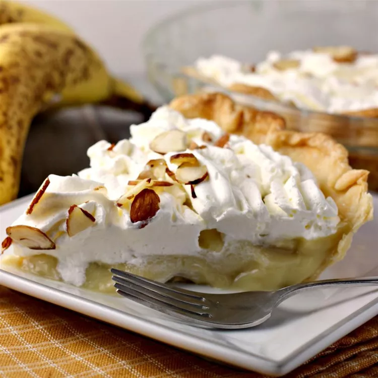

Banana Cream Pie Recipe

Ingredients
- 3/4 cup of white sugar
- 1/3 cup of all-purpose flour
- 1/4 teaspoon salt
- 2 cups of milk
- 3 egg yolks, beaten
- 2 tablespoons of butter
- 1 1/4 teaspoons of vanilla extract
- 1 (9 inch) pie crust, baked
- 4 bananas, sliced
Directions
- Preheat the oven to 350 degrees F (175 degrees C).
- Combine sugar, flour, and salt in a saucepan. Gradually stir in milk. Cook, stirring constantly, over medium heat until mixture boils and thickens. Continue to cook and stir for 2 more minutes, then remove from the heat.
- Place egg yolks in a medium bowl; whisk in a small amount of the hot milk mixture until smooth, then gradually whisk egg yolk mixture into the saucepan. Cook over medium-low heat, stirring constantly until mixture coats the back of a spoon, about 2 more minutes. Remove from heat and stir in butter and vanilla.
- Fill pastry shell with sliced bananas; pour pudding mixture on top to cover.
- Bake in the preheated oven until filling sets, 12 to 15 minutes. Let pie cool completely on a wire rack, then chill pie in the refrigerator for at least 1 hour before serving.